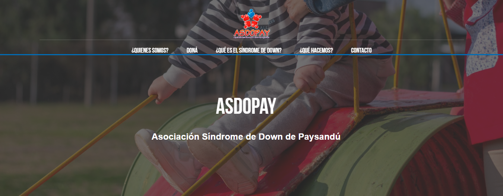
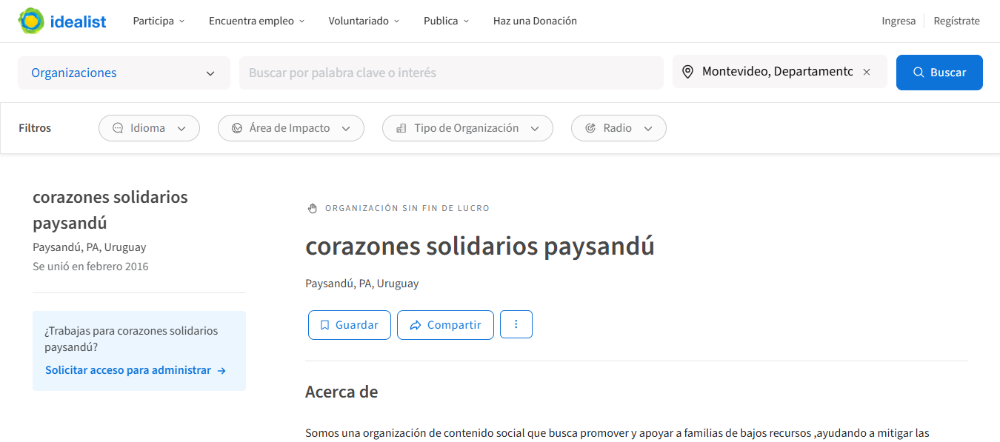
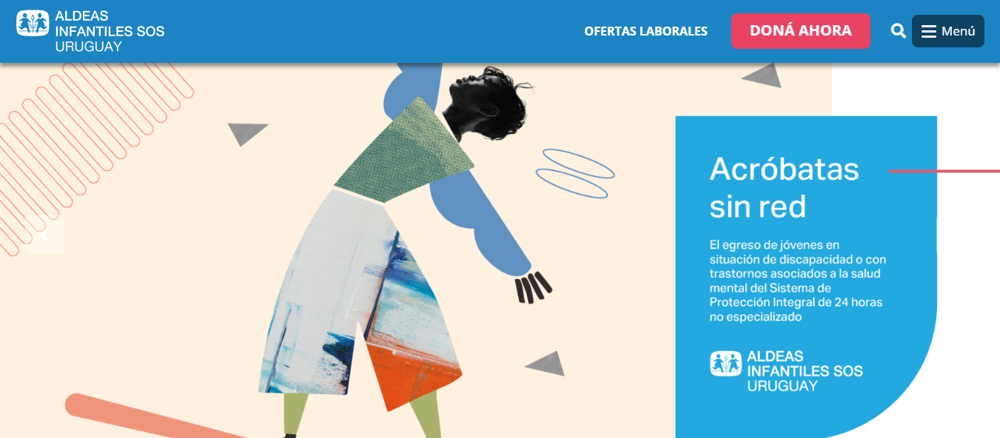
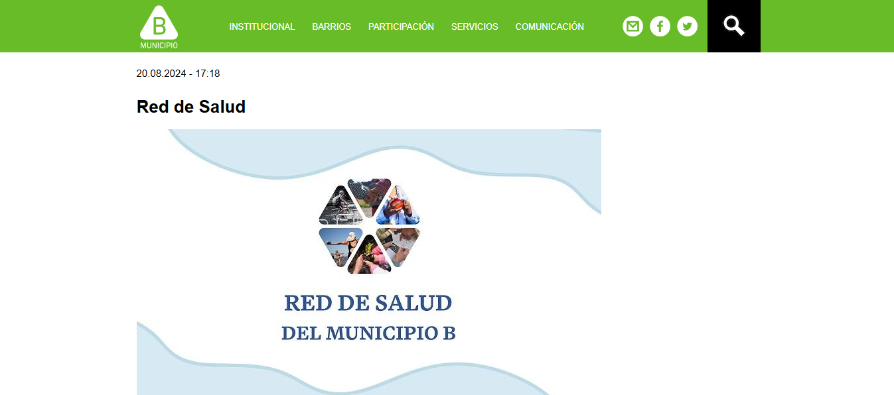

Bienestar Social y Salud
-

ASDOPAY (Asociación Síndrome de Down de Paysandú)
Acompaña la integración social y educativa de personas con síndrome de Down.
Visitar página oficial -

Corazones Solidarios Paysandú
Apoya a familias vulnerables mediante acciones solidarias en salud, alimentación y educación.
Visitar página oficial -

Aldeas Infantiles SOS Uruguay
Protege a niños y adolescentes y brinda apoyo familiar junto a INAU en Paysandú.
Visitar página oficial -

Red de Salud Comunitaria – Municipio B
Promueve la salud desde un enfoque territorial y comunitario coordinando esfuerzos locales.
Visitar página oficial